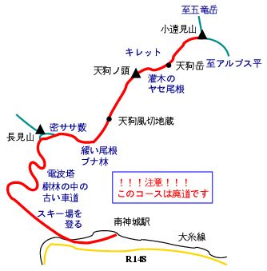

（廃）五竜とおみトレッキングコース

北アの高峰を麓から登るシリーズ？第2弾（第1弾は親不知から栂海新道で白馬岳。荒天のため朝日岳で敗退）。五竜岳を目指したが、事前の調査の不足で廃道を、しかも大雨の中、歩いてしまった。
このコース、地形図に破線があり、'96年度版のエアリアマップにはコースが記載されて、あまつさえ解説まであるのだが、'99年度版にはどちらもない。行ってみたら、やっぱり…だった。
前日14日の夜は熱低（最近は温低というらしい）が近づき、大雨（丹沢ではキャンパーが流される事故が起きた）。桐生を車で発ち、神城へ向かうが、上信越道は藤岡〜妙義間が大雨で通行止め。碓井バイパスも×。下を走って妙義ICから高速に乗り、豊科ICで降りて南神城駅に到着。
駅前には広い駐車場やWCがあり、車内で仮眠する。夜半は雨だったが、朝には止んだので歩き出す。「サンアルピナ白馬さのさかスキー場」を奥まで詰め、古い林道を歩く。草藪がひどい。長見山付近の稜線に上がると緩い登りとなるが、濃い笹藪漕ぎ。おまけに雨が降り出す。まぁ、標高が上がれば藪も低くなるかと思ったら、そうではあったがやはりすごい藪。久々に漕いだ〜。
天狗風切地蔵は笹藪に埋もれていた。写真を撮れば良かったが、雨の中ではザックからカメラを取り出す気が起らなかった。今、思うとちょっと残念。なお、風切地蔵とは、白馬に吹く突風「岳おろし」や害虫から農作物を守り、風邪や疫病をもたらす悪霊を追い払うというお地蔵様で、こことアルプス平・地蔵の頭、千国街道沿いの落倉などにあるそうだ。
地蔵を過ぎると灌木＋藪。尾根も少し痩せてくる。晴れていればとても眺めが良いに違いない。天狗ノ頭と天狗岳の頂上には立派な道標があり、かつては整備されたルートだったようだ。しかし、ひと気のない小遠見山に着くと、このコースの入口にはロープが張られ、立ち入り禁止になっていた。
小遠見山まで、6時間もかかり、しかも雨。五竜岳は諦めて、アルプス平からテレキャビンであっさり下り、神城駅からJRで南神城駅に戻る。S&Sが小谷♨山田旅館に来ていたので、車でそちらへ向かう。旅館、渋すぎ。一泊できてラッキーだった。翌日、S&Sは雨飾山に登るというが、装備がびしょぬれの私は登る気なし。二人を登山口まで車で送り、まる一日のドライブで帰桐した。